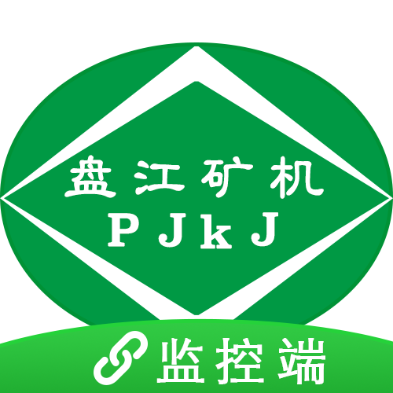
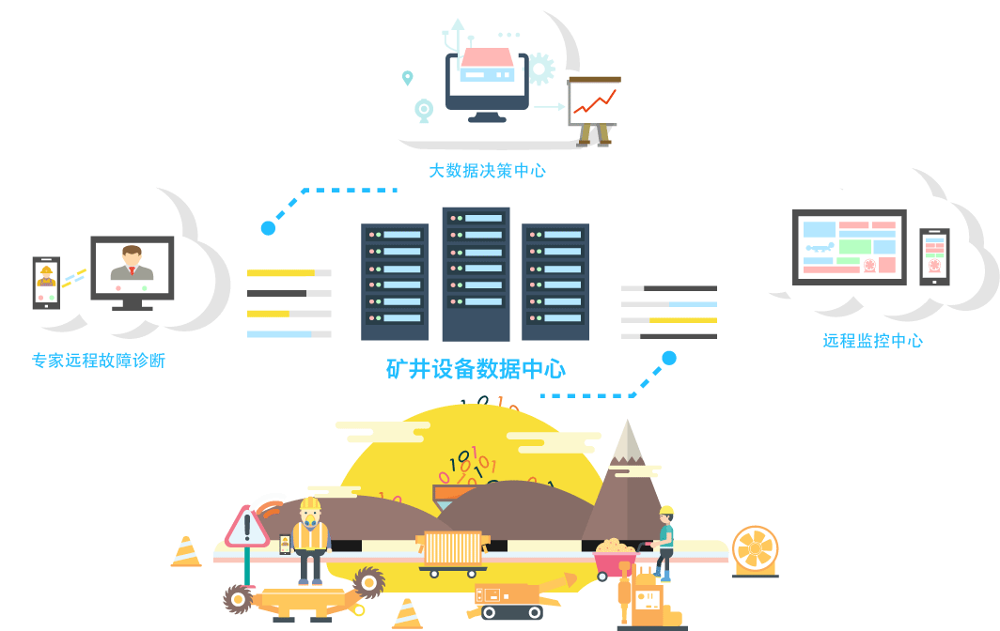

盘江矿井设备物联网云平台
设备监控客户端
盘江矿井设备物联网云平台是盘江矿山机械有限公司联合南京麦伦思科技有限公司联合开发面向盘江精煤股份下属各个矿山，用于设备远程的连接和实时监控，设备故障处理和设备全生命周期数据记录的信息平台，是盘江智能矿山和数字矿山的重要组成部分。
设备监控客户端是提供给矿和机电公司及股份公司相关领导用于实时查看矿井设备运行状态和故障跟踪的手机客户端。

盘江矿井设备物联网云平台结构示意图